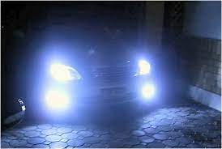

Maintenance Page
Engine oil
To check your car's engine oil, follow these steps:
- Prepare: Ensure your vehicle is parked on level ground, the engine is off, and it's cool.
- Locate the Dipstick: Find the dipstick, usually near the front of the engine or in the engine bay.
- Pull the Dipstick: Remove the dipstick, wipe it clean, reinsert it, then pull it out again.
- Note Oil Level: Check the oil level on the dipstick; if it's between the minimum and maximum marks, it's fine.
- Top Up if Needed: If the level is below minimum, add some oil using the correct type for your car, pouring it in slowly and checking the level with the dipstick to avoid overfilling
Coolant
To check your car's coolant level, follow these steps:
- Ensure Engine is Cold: It's crucial to check the coolant level when the engine is cold to avoid burns from hot coolant
- Locate Coolant Reservoir: Find the coolant reservoir under the hood, usually marked with "coolant" or specific symbols
- Check Coolant Level: The reservoir is transparent with "min" and "max" markings; ensure the coolant level is between these marks
- Top Up if Needed: If the coolant is below the "min" line, add a mix of coolant and de-ionized water in the correct ratio, typically 50-50, using a funnel to avoid spills
Lights
To check if your headlights are working:
- Operate Switch: Turn on the ignition (if necessary) and then turn on the headlight switch to the dipped beam position
- Walk Around the Vehicle: Get out of the car to check that both the headlights and tail lights are working
- Sequence to Follow: When checking the lights, go through the following sequence: side lights, dipped beams, main beams, fog lights, front indicators (left and right), brake lights, reversing lights, rear indicators (left and right), and hazard lights
- Immediate Replacement: If any of your lights are faulty, ensure they are replaced immediately to maintain road safety
Battery
To check your car's battery:
- Turn Off the Ignition: Ensure the ignition is turned off to avoid any electrical interference
- Access the Battery: Open the hood and locate the battery, typically found in the engine bay
- Check the Terminals: Inspect the battery terminals for any signs of corrosion or damage
- Use a Multimeter: Set a multimeter to the DC voltage setting, usually 20V, and connect the red lead to the positive terminal and the black lead to the negative terminal of the battery
- Test the Battery: A fully charged battery should read between 12.4 and 12.7 volts. If the reading is lower than 12.2 volts, the battery needs to be charged. If the reading is over 12.9 volts, consider having the alternator checked by a professional
Wiper blades
To check your car's wiper blades, you can follow these steps:
- Inspect the Blades: Examine the wiper blades and look for any damage or excessive wear
- Replace if Necessary: If the wiper blades are not performing correctly, they should be replaced, ideally every six to twelve months, depending on their condition
- Remove the Old Blades: Pull the wiper arm away from the glass and into an upright position. Locate the release tab or attachment clip on the blade and disengage it. Slide the old blade down toward the windshield until it separates from the wiper arm
- Install New Blades: Ensure you have the correct size for each side of the vehicle. Slide the attachment bracket of the new blade onto the hook arm from below. Secure the new blade into place by clicking the bracket and wiper arm together. Pivot the wiper so the blade faces the glass and place the wiper arm back into position